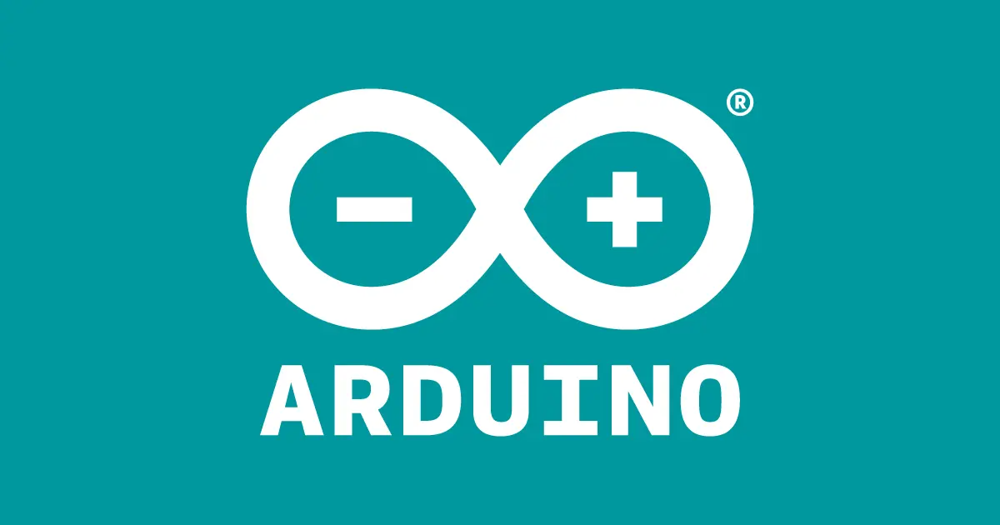
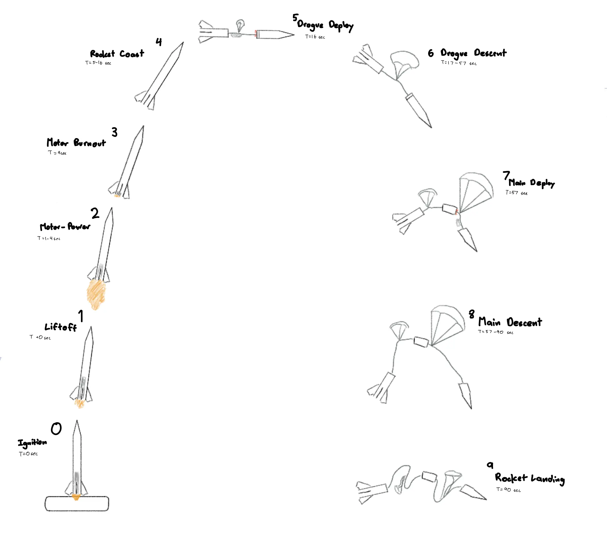
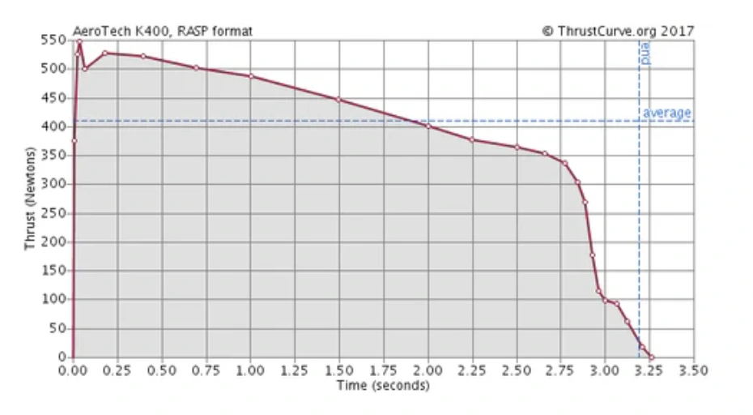
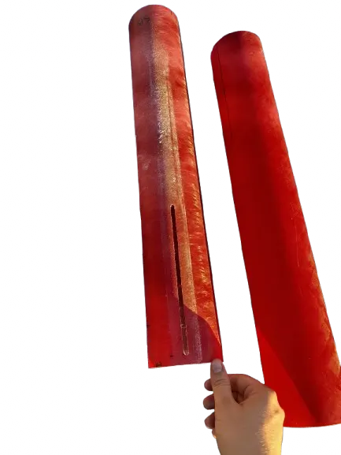
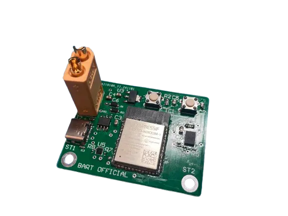
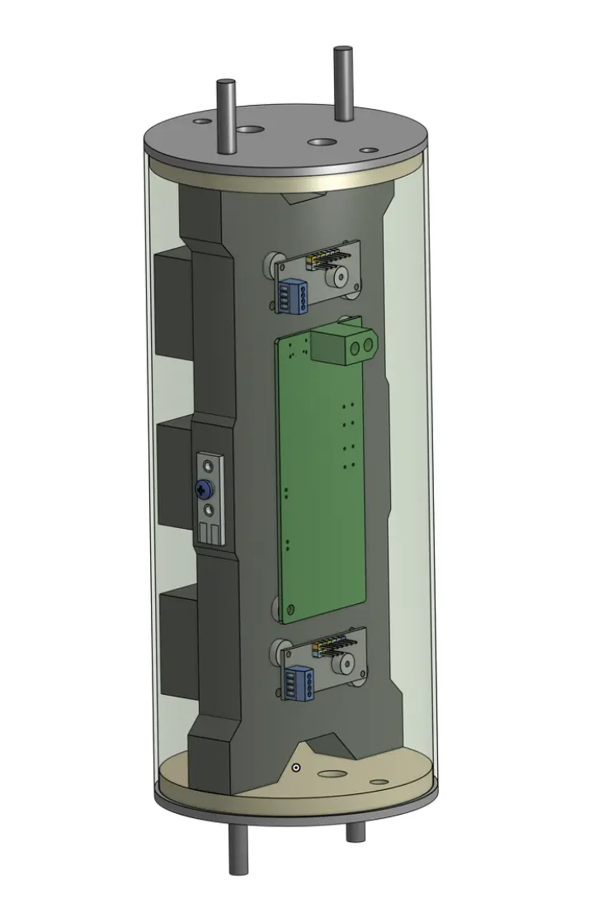
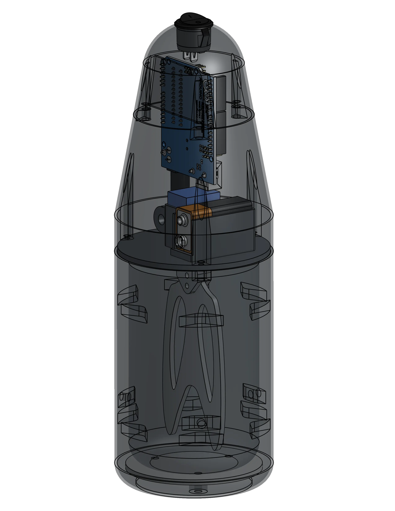

Propulsion
Aerotech 54mm HP SU DMS Motor - K400C-14A capable of 1361 Ns of impulse with average thrust of 400N.
BART is a K-class onboarding project for Berkeley's Space Technologies and Rocketry (STAR) team. Within a team of 8, we learned the fundamentals of making rockets: from design to fabrication to launch!
ROLE
Mechanical Engineer
TOOLS


TEAM
Justin A.
Ethan D.
Justin K.
Evan M.
Diego P.
Theo P.
Arnav S.
This rocket is designed and built as one of the Universal Intro Projects (UIP) for Berkeley’s Space Technologies and Rocketry (STAR) team. This semester-long onboarding project introduced new members to all elements of rocket design and fabrication through launch through building a K-class high-powered rocket. Workshops led by experienced STAR members introduced concepts on airframe design & CAD, avionics PCB design, recovery, payload, and more allowing us to apply those skills towards our rocket.
For all eight members of Berkeley Aerial Rocket Transport (BART) team, this is the first rocket we’ve ever built. The primary objective of this project is to construct a Level-2 rocket capable of achieving an apogee of approximately 5000 feet within a single semester. This rocket carries a custom-designed payload: an arduino-powered ice cream maker roughly the size of a 2U CubeSat.

Following the design process of the rocket, the overarching architecture starts with a 2D Open Rocket layout, which sets the specs for propulsion, airframe, and recovery. Development for the avionics and electronics happened concurrently alongside the fabrication process for the rocket, as well as payload development and iteration.
OpenRocket is a rocketry simulation tool that enables us to design and simulate the rocket's behavior at various stages of its launch. Many of the parts were dimensioned based on the stock materials available and propulsion motor. Starting with the base layout, each rocket component— such as body tubes, nose cones, fins, bulkheads, and recovery systems like parachutes and shock cords—were added to fit the overall design goals.
Aerotech 54mm HP SU DMS Motor - K400C-14A capable of 1361 Ns of impulse with average thrust of 400N.


5:1 Von Kármán nose cone, fiberglass body tubes, bulkheads, and tapered swept fin all bonded together with lots of JB Weld Epoxy finished a BART-inspired paint job!
Custom designed PCBs equipped with in-flight barometer and IMU data saved to flash drive.


Calculations derived a 24" drogue and 58" main parachute to ensure safe landing KE, attached with braided kevlar to the quarks and ejection charges.
Arduino-powered ice cream maker designed with rapid-prototyping, attached to rocket with 5mm heat set inserts.

Through this project, I was able to learn a lot about rocketry and how the different components come together. This also my first time assembling and working with custom PCBs, as well as product design principles through the payload development process.
Going forward, I am excited to implement more simulation to optimize rocket performance and dive deeper through working on the competition rockets for STAR. This project wouldn't be possible without the mentorship of the experienced STAR members and leads whose expertise was a consistent source of help throughout the entire process!
The rocket successfully launched in February of 2025 at the Friends of Amateur Rocketry (FAR)’s Mojave Test Area, reaching a 2,944 ft apogee, achieving 30% deviation from predicted altitude.